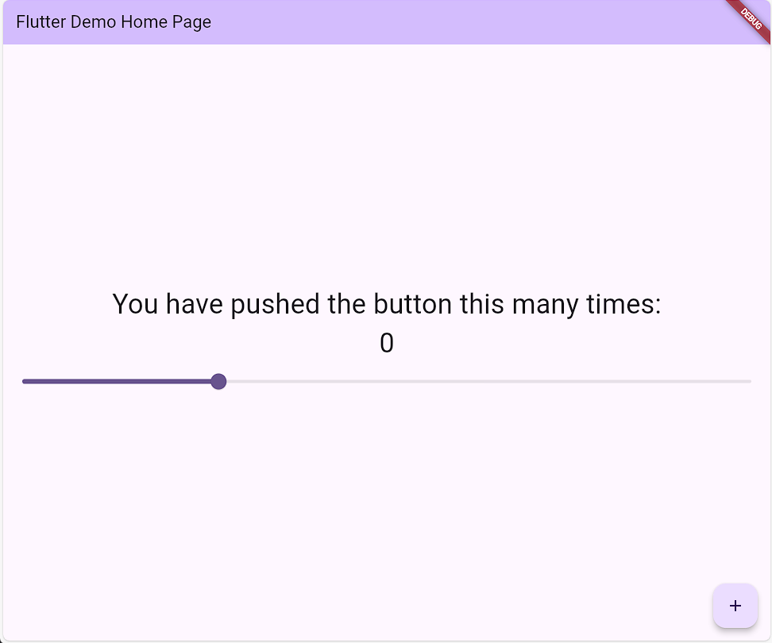
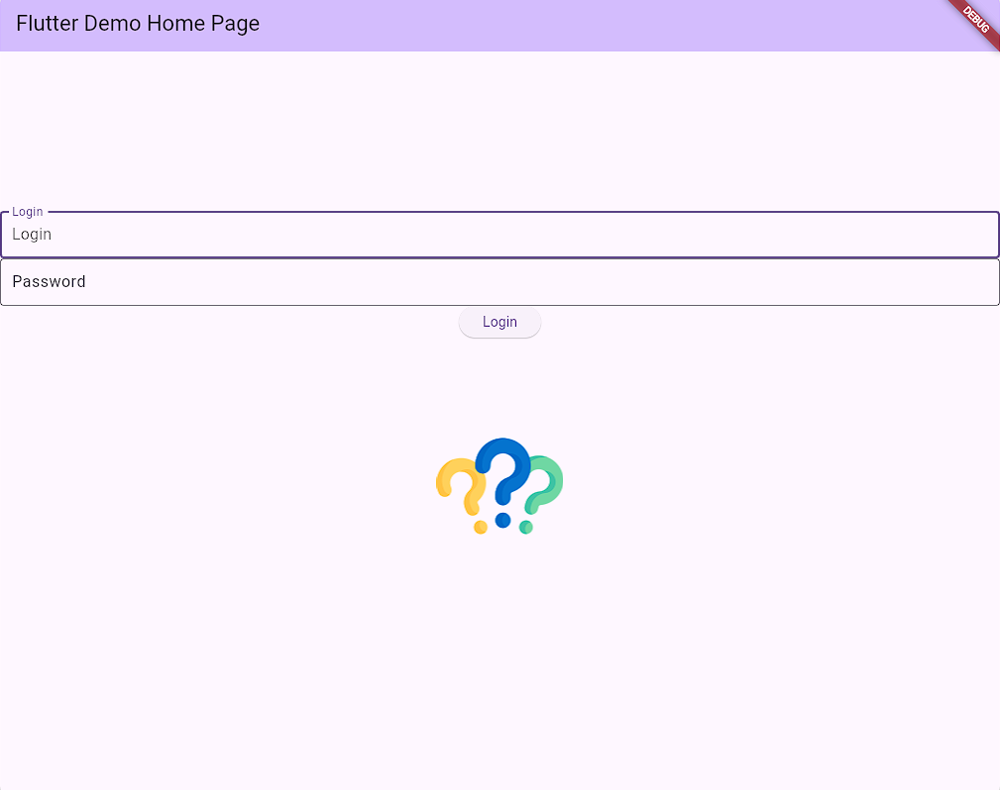
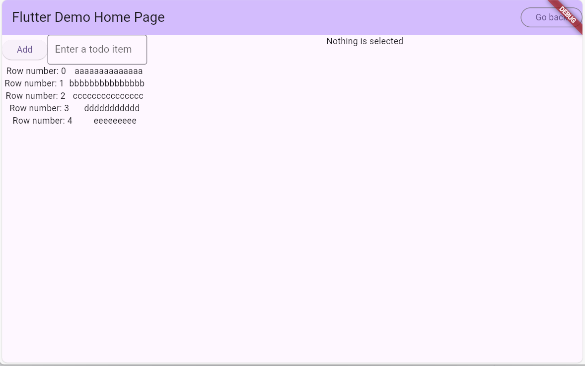

When testing applications, there are many things that you can test. Usability, Speed, Unit testing, Integration testing, Functionality testing, etc. This could take up a whole course, which we won't do today. Instead, we will focus on functionality testing, meaning does your app do what it is supposed to do. Does it function properly?
When creating designs and layouts for an application, you would be implementing a Unit testing strategy. Every page can be thought of as an independent unit that doesn't depend on other pages. That is why the Repository pattern is useful because you can just initialize the repository with a setup function and then run your tests.
The basic strategy for testing a page is to test various input Widgets with different correct and incorrect input:
For a TextField, you would want to test the behaviour with empty, correct, and incorrect values (3 different attempts).
For a switch or checkbox, you would want to test what happens when the Widget is On, and again with it Off (2 attempts).
Then you want to exhaustively test every combination of inputs: 3 attempts for text field x 2 attempts for checkbox = 6 different tests
For a button or GestureDetector, you should test every combination of activating the Widget: tap, double-tap, long-press, etc.
Each method would be a different attempt at testing the button or GestureDetector.
Ideally, you would test every control path that is in your code. Every time there is an if / else then you would test something that executes the code for the if case and then input for the else case.
Let's look at a few of the previous labs and discuss how we would test them and come up with a test plan:
How would you test Week 1?

How would you test Week 2?

How would you test Week 8?
